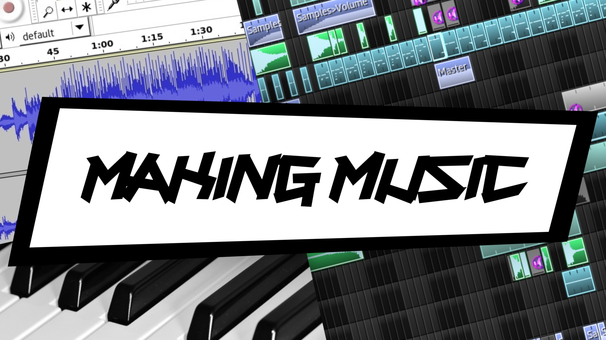
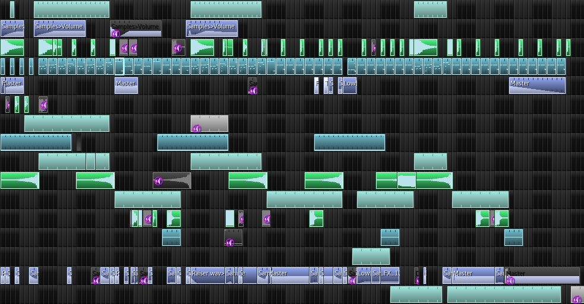

Blog
Music
Releases
Resources
Blog
Music
Releases
Resources
So, how do you make music?
Music Making ©
Well, there are several ways of making music:
1. On a computer
2. Recording yourself
3. Making lyrics
4. Making Improvisations
A Daw (software for making music on a computer) ©
1. On a computer
⇢ Most of today's music in either made or edited on a computer. You have to know how to edit your music, even if your are only recording it with (so, not making it with) a computer.
To tell you 1 thing, making music on a computer is not hard at all. You only have to know how to put certain effects (samples) in a song to make it sound ok.
You basically have to know how to get along with a Daw (the name for music making software) and with a Waveform Editor (for editing soundfiles).
Lmms is a great Daw and Audacity is ok for editing waveforms. Even so, you have to know what to actually do with them, so:
 ⇢ Set maximum release for samples ⇢ Search for samples and presets online
⇢ Samples
⇢ Presets
⇢ Copy and paste rhythms to variate them⇢ Be dynamic. If you don't like what you made, leave it. ⇢ Order your song versions in the filename. ⇢ Quality soundfile extensions only (.wav) ⇢ Tag with interesting (unknown) genres ⇢ Master your song as you make it (mastering means adjusting volumes) ⇢ Fade in and out (to eliminate clipping sounds)
⇢ Set maximum release for samples ⇢ Search for samples and presets online
⇢ Samples
⇢ Presets
⇢ Copy and paste rhythms to variate them⇢ Be dynamic. If you don't like what you made, leave it. ⇢ Order your song versions in the filename. ⇢ Quality soundfile extensions only (.wav) ⇢ Tag with interesting (unknown) genres ⇢ Master your song as you make it (mastering means adjusting volumes) ⇢ Fade in and out (to eliminate clipping sounds) 2. Recording yourself
If you don't want to stay in front of a computer for long, you could make music without it. Even so, for recording it right, you might have to have a studio.
If you know piano, for example, you could record yourself and make music like that. Even so, in order to make a score, you have to have a computer.
To be more realistic, I will tell you that you could record yourself at home, but not at the quality you want. If you do that, make sure it's complete silence, that you know what you will sing and that you are not annoying anybody.
If you record yourself, make sure that you are close to the microphone and that you are not making sounds with your chair (standing is preferred). Make sure that you:
⇢ Denoise your recordings (with the waveform editor) ⇢ Mind the rhythm (get a metronome) ⇢ Find your own style
⇢ Master your recording (with an equalizer etc.) A Piano ©
3. Making lyrics
Now, making lyrics is the closest you could get to making music without actually making it. Also, you could do it any time of the day without annoying anybody.
In order to organise the text you make, Latex could help. If you want to make lyrics, you have to select a genre and find yourself words to make yourself music with.
So, make a list of words that you want to put into your lyrics and, when you are searching for a rhyme, go to that list.
Lyrics enable you to make actual songs and, if you know how to make a rhythm (on a computer), you could record yourself and (Ta da!) you have a song. 1 thing:
⇢ Make things that rhyme 4. Making improvisations
Doesn't sound hard, could come up less great than you want it. That's it with improvising.
For me, making music fast by improvising means that I sit down in front of a piano, laying down not more than a bunch of chords and sing ontop of that. It's the lyrics that make your song unique, in this case.
I continue mentioning the piano, as, it is the main thing that you have when making music (even on the computer). So, you could at least know the chords on a piano.
It's not how you make it, but what you have when your are done.

A Waveform Editor ©
So, make sure to find your own music making style to make great music.
Blog post type: Music